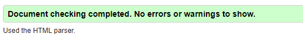
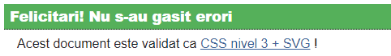
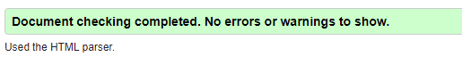
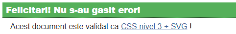

Proiect DAWNC
Autori
- Nicoara Tudor
- Burlacu Emil-Claudiu
- Piclea Cristina
Abstract
Aplicatia noastra intentioneaza sa imite jocul electronic PACMAN, avand drept harta reala a labirintului corpul C al Universitatii “Alexandru Ioan Cuza”. Oponentii sunt personaje create de calculator si/sau alte persoane participante in cadrul jocului. Utilizatorul uman va fi reprezentat pe baza imaginii profilului de Facebook. Pentru fiecare runda, sistemul va genera aleatoriu un labirint, in functie de nivelul jocului. Vor fi oferite pilule energetice care vor contribui la marirea scorului. In cadrul labirintului vor aparea “fantome” care vor fi infatisate prin imagini ale profesorile/prietenilor din reteaua sociala la care este arondat jucatorul (Facebook).
Detalii
- - un singur pacman;
- - 4 fantome ce infatiseaza chipurile profesorilor;
- - scorul creste odata cu strangerea coin-urilor;
- - utilizatorul foloseste tastele sageti pentru a se deplasa prin labirint.
- - paginile sunt valide din punctul de vedere al codului HTML/CSS
- - pagina principala contine un formular de login cu ajutorul caruia utilizatorul se poate loga cu Facebook-ul:
- - dupa login utilizatorul va fi redirectionat catre pagina de start a jocului:
- - dupa apasarea butonului START, utilizatorul va fi redirectionat catre pagina jocului:


 





Concluzie
In final, se doreste definitivarea unei aplicatii single-page responsive.
Sursa
- Ca sistem de management al codului-sursa a fost folosit Github. Proiectul poate fi gasit aici.